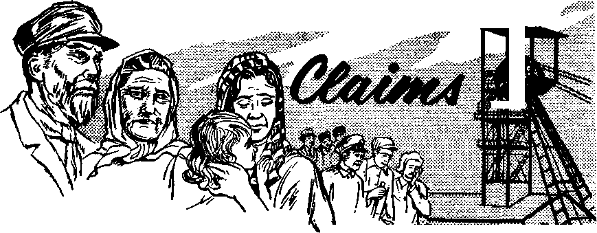

Christ Is Present! Where?
PAGE 5!
Christ Is Present! Where?
PAGE 5!
They Found a Way
PAGES
Why Visit the Dead?
PAGE 20
What’s Wrong with Labels?
PAGE 24
MAY 8, 1962
THE MISSION OF THIS JOURNAL
New> source* that are able to keep you awake to the vital issue* of our times must be unfettered by censorship and selfish interests. "Awakel" has no fetters. It recognizes facts, faces facts, is free to publish facts. It Is not bound by political ambition* or obligations; it is unhampered by advertiser* whose toes must not be trodden on; It is unprejudiced by traditional creed*. This journal keeps itself free that it may speak freely to you. But it does not abuse its freedom. It maintains integrity to truth.
“Awake!" uses the regular news channels, but is not dependent on them. Its own correspondents are on oil continents, in scores of nations. From the four corners of the earth their uncensored, on-the-scenes report* come to you through these columns. This journal's viewpoint is not narrow, but is international. It is reod In many nations, in many languages, by persons of all ages. Through its pages many fields of knowledge pass in review—government, commerce, religion, history, geography, science, social conditions, natural wonders—why, Its cover* age is as broad os the eorth and as high os the heavens.
“Awokel" pledges itself to righteous principles, to exposing hidden foes and subtle dangers, to championing freedom for ail, to comforting mourners and strengthening those disheartened by the failures of a delinquent world, reflecting sure hope for the establishment of a righteous New World.
Get acquainted with "Awakel" Keep awake by reading “Awakel"
UM— ■ I ■ ■
Published Simultaneously in th a United Statib by tub WATCHTOWER BIBLE AND TRACT SOCIETY OF NEW YORK, INC.
117 Adams Street Brooklyn 1, U.S.A*
and in England by WATCH TOWER BIBLE AND TRACT SOCIETY
Watch Tower House, The Ridgeway London N.W, 7, England
N. H. Knore, President Grant Suites, Secretary
Printing thia iaaue: 3,550,000 4d
“Awakt!” It prtlhMd la th* following 25 lanmiai: Stalnrnthly—Afrikaans, Clnyanja, Danish, Dufch, Eng-Hob, Finnish, French, German, Greek, Italian, Japanew, NcrwegiaiJ, ptttugiiese, Spanish, Swedish, Tagalog. Zulu. Monthly—<!etiu-Vhayan, Chinese, Ilocano, Korean, Malayalam, Polish, Tamil, Ukrainian.
Yearly aubgtrlplkia rates
Qflta) for semimonthly edition*
America, U.S., 117 Adara St., BrMklyn 1, N.Y. SI A it trails, 11 Beresford Rd., SLrathfleld, N.8.W. 8/-
Canada, 150 Bridgeland Ave., Toronto 19, Ont |1 England, Watch Tower House,
The Ridgeway, London N.W. 7 7/-
Naw inland, 681 New North Rd., Auckland, S.W, 1 7/-Bllth AfrlM, Private Bag, EJandtfoTitein, Tvl. 70c Monthly editions cost half the above rates.
a copy (Australla, fid; South Africa* 3^bc) Ami I tian mi for subscriptions should be sent to th* cfflce In your country. Otherwise send your remittance to London. Mot Io* of aaplntlon la sent at least two Issuea before subscription expire.
CHANGES OF ADDRESS skuld mash si thirty lays bofcro your moving data. Give as your all and new addrut (If gout bit, your old address label). Watch Tower, Wateh Tow Hill*, The ftldpway, London M.W. 7, Eagluid.
Entered as eecond-cJaas matter at Brooklyn, N.Y. Printed in England
The Bible tnnafatlon ited tn “Awake!" la the Naw Werld Tra»tetlon of the H*1y serlgtara, 1951 edition. When other tranalatlou are asad the following symbols will Mtear behind the citations:
AS — American Standard Ver&lon AT - An American TranelaLten AV - Authorised Version (1611) Da - J. N- Darby's veralon
Dv - Catholic Douay version 2?D — The Emphatic Diaglott JP - Jewish Publication foe, Le - Isaac Leaser^ version
Mo — James Moffatt's version 72O - J. B. Rotherham's version RS - Revised Standard Verdon Yff - Robert Young's venion
Does Popularity Make It Right?
Christ Is Present! Where?
They Found a Way
A Coal Mine Claims Its Victims
Elk Hunt in Sweden
The “Magic” Fiber
Doctors and Transfusions
9
13
15
16
19
3 Why Visit the Dead?
5 Income-Tax Deduction
20
What’s Wrong with Labels? Backfire
“Your Word Is Truth”
What Is Meant by “Breaking Bread”?
Watching the World

THE practice of permitting popular opinion to select political rulers preserves free government, but does it establish what is right and what is wrong?
MAKE IT
RIGHT?
Is the opinion that almost everyone holds in a community or are the things almost everyone does necessarily the right things? No, the majority can be wrong.
Too often people let popular opinion shape their standard of values, to their own detriment. They let the majority form their opinions, their way of thinking and their habits. Regarding this the nineteenthcentury English economist, Walter Bage-hot, observed: “Public opinion is a permeating influence. It requires us to think other men’s thoughts, to speak other men’s words, to follow other men’s habits.” Perhaps this is due to the feeling that thousands and possibly millions of people cannot be wrong. But they can be wrong! The knotty moral problem that confronts so many nations today is proof that popular opinion is no standard for what is right.
Sexual promiscuity is a popular thing in many places, but that does not make it right. So widespread is the practice that in 1960 it was reported that since 1957 infectious syphilis has increased in various localities from 100 to 400 percent. Sociologists estimate that one bride in every five to ten marriages in the United States is pregnant before the marriage knot is tied. In Sweden the estimate is that about half the brides are pregnant. With loose morals a common thing among young people and adults, should such popular actions be considered as setting right standards? How can they be when they are morally degrading, corrupting, and, above all, violations of the law of God? Is this not also true of business practices that make a disgrace of outward professions of honesty and truthfulness?
Although dishonesty in business is widespread and considered by some persons as necessary to survive in business, they are not right. Such thinking is a morally bad influence that contributes measurably to the decay of public honesty and truthfulness. This was indicated in the television scandals of 1959. For the sake of commercial profit television contestants in certain quiz programs were persuaded to participate in a deception of the television audience. On top of that they lied to an investigating grand jury. This dishonesty reflected the generally bad attitude that pervades the business world. Can this malignancy in modern business be considered a right standard because it is widespread? The same question can be asked about gambling.
Americans wager as much as $50 billion illegally every year, clearly indicating that gambling is a popular thing. But this popularity does not make it a good thing, something that is beneficial for the people. On the contrary, its influence is corrupting. It creates the environment that breeds all types of vice, including the corrupting of public officials. In the city of Reno, Nevada, where gambling is unrestricted, there is more crime per capita than any other place in the entire United States. Murders there exceed those in cities that are four times as large. Its rate of suicides is twice the national average. The popularity of gambling does not alter the fact that its influence on society is decidedly bad.
The excuse so often heard that ‘everyone else is doing it’ does not justify wrongdoing. It does not make fornication and adultery, lying, gambling, dishonesty, stealing from an employer, looting of stores and homes during times of disaster or national revolts, or the persecuting of people in popular disfavor the right thing to do. Instead of permitting yourself to be swept along with the crowd, you should have moral standards to which you will stick, even when you find yourself standing alone against what is popular. This is what Christians strive to do.
The good laws and high principles of the Scriptures' are the moral standards for Christians, By holding fast to them they often find themselves clashing with popular opinion and practice. The apostle Peter remarked about this: “For the time that has passed by is sufficient for you to have worked out the will of the nations when you proceeded in deeds of loose conduct, lusts, excesses with wine, revelries, drinking matches, and illegal idolatries. Because you do not continue running with them in this course to the same low sink of debauchery, they are puzzled and go on speaking abusively of you.” (1 Pet. 4:3, 4) These are the things persons who have become Christians left behind when they ceased to live by popular standards and began living by God’s standards. From the time of Peter down to this day the effort of Christians to live by what God says is right or wrong, good or bad, has brought upon them much abuse and great unpopularity with the world.
Today Jehovah’s witnesses are condemned and spoken of abusively because they refuse to participate in popular practices that violate the laws of God. Having chosen to live by God’s standards of what is right and what is wrong, they do not run the same course the people of the world do. This makes them singularly different, whether they live in countries behind the Iron Curtain or in countries outside the Iron Curtain. Because Jehovah’s witnesses do not hold to popular opinions, popular customs and popular habits of living when these clash with the Word of God, it becomes evident to people of the world that they are not part of the world, and, as Peter says, "they are puzzled.” Despite popular disfavor, these Christians prefer to live by God’s standards.
Man’s Creator is in the best position for establishing what is good or bad, right or wrong. His standards of morality are the very best for mankind ijo matter how contrary they may be to popular opinion and practices. Stick by those standards despite the abusive tongues and angry scowls of those who mistakenly think that popular opinion is always right. Seek the approval of the righteous Creator rather than the approval of unrighteous men. Remember: “The world is passing away and so is its desire, but he that does the will of God remains forever.”—1 John 2:17.
known? Whtrl do«* it
mean to mankind?
How do the Scripturei
thaw that hl* tecond
tion has'~been made that Jesus Christ is present. In fact, the official journal of Jehovah’s witnesses for a long time bore the title “The Watchtower and Herald of Christ’s Presence.’’
What is the basis for this proclamation ? If Christ is present, where is he? Why do we not see him? Since when has he been present, and how can we know he really is present?
As with most other teachings of the Bible, there is a wide difference of opinion in Christendom regarding Christ’s second presence. Many modernist clergymen hold that his second presence is not something that will actually take place. They do not believe it to be an actual event to be anticipated but hold that Christ keeps coming by means of the spread of the Bible.
But certainly his apostles thought of his second presence as a certain event or they would not have asked Jesus: “What will be the sign of your presence?” That Jesus meant to return at a certain future time is also clear from his own words: “If I go my way and prepare a place for you, I am coming again.” The very fact that the disciple James wrote: “Exercise patience, therefore, brothers, until the presence of the Lord,” shows a specific future time was meant. And so do Jesus’ closing words of his Revelation: “Yes; I am coming quickly.” Without a question of doubt, Christ’s second presence does take place at a specific time.—Matt. 24:3; John 14:3; Jas. 5:7; Rev. 22:20.
Presence Invisible, as a Spirit
The great majority of those who
look for Jesus actually to return, however, expect him to come in the same body in which he was put to death and they expect that he will be seen by all mankind. But how could Jesus come in a human body when he no longer is flesh and blood but a spirit? As the apostle Paul says: “Even if we have known Christ ac-
cording to the flesh, certainly we now know . him so no more.” And why not? Because he “died once for all time . . . being put to death in the flesh, but being made alive in the spirit.” That is why Jesus plainly stated just before his departure: “A little longer and the world will behold me no more.”—2 Cor. 5:16; 1 Pet. 3:18; John 14:19.
In fact, Jesus did not even ascend into heaven in his human body, because “flesh and blood cannot inherit God’s kingdom.” It will do no good to argue that upon his resurrection Jesus was “flesh and bones” and not flesh and blood, because “neither does corruption inherit incorruption,” and a flesh-and-bones body is as corruptible as a flesh-and-blood body. To try to make a distinction between the two betrays a lack of understanding of the context in which the expression “flesh and bones” appears. It was on the occasion when Jesus appeared to his disciples after his resurrection and when they feared they were seeing a spirit. To assure them that he was actually a material, not a spirit person, he having materialized a human body for the occa-slot!, he said to them: "reel me ana see, because a spirit does not have flesh and bones just as you behold that I have.” He did not say “flesh and blood” because they could not feel his blood, but they could feel his bones as well as his flesh,—1 Cor. 15: 50; Luke24:39.
Further, upon his resurrection Jesus became the “reflection of [God’s] glory and the exact representation of his very being,” This being so, no human can now see Jesus and live, even as no man could ever see Jehovah God and live. Since his resurrection Jesus “dwells in unapproachable light,” and “not one of men has seen or can see” him now. Only those who will have a heavenly resurrection similar to his will be able to “see him just as he is.” That is why a mere glimpse of Jesus’ glory blinded Saul of Tarsus.—Heb. 1:3; 1 Tim. 6:16; 1 John 3:2; Ex. 33:20; Acts 9:3-8.
Facts and Reasons
Supporting the direct Scriptural testimony as to Jesus’ present spirit nature are the facts concerning his resurrection. Repeatedly after his resurrection Jesus suddenly appeared in the midst of his disciples, even though the doors were locked because of fear of the Jews. We do not read of his doing this before he died, for the obvious reason that in his human body he was not able to enter a room without some visible means. But as a spirit, not bound by the three dimensions, he could pass through walls and materialize in the presence of his disciples.—John 20:19, 26.
That Jesus’ return must be as an invisible spirit is also dictated by reason. Were he to return in a human body it would mean that mankind no longer would be redeemed, for Jesus gave his human body to redeem it: “This means my body which is to be given in your behalf.” “For a fact, the bread that I shall give is my flesh in behalf of the life of the world.” Having Burrenaerea ms numan me ror man s uene-flt, Jesus cannot take it back.—Luke 22: 19;John6:51.
Reasoning further on the subject, we may well ask, Is there any reason why Jesus should return in a human body? There were sound reasons for his coming as a human at his first presence. He came as a human that he “might taste death for every man,” that he might “bear witness to the truth,” and that he might learn “obedience from the things he suffered.” In short, he came to ransom mankind and to vindicate his Father’s name. All this required that he become a human.—Heb. 2: 9; John 18:37; Heb. 5:8, 9.
But he comes the second time to rule as king over men, to judge the living and the dead, to destroy the wicked, including Satan and his demons, and to reward the righteous, to restore Paradise to this earth —in short, to have God’s will done, as in heaven, also on earth. (See Isaiah 11:1-9; Matthew 6:9, 10; 25:31-46; Luke 19:27; 22:29, 30; 2 Timothy 4:1; Revelation 20: 1-3; 21:1-4.) This being so, it is obvious that, to carry out these purposes of God, Jesus requires, not a human, but a glorious divine organism.
Considering Objections
But perhaps some will object, saying: Was not Jesus raised from the dead in the same body in which he died? No, he merely materialized as did angels in times past. As such he, to all appearances, was fully as human as any actual human was, able to eat and drink, just as did the angels that Abraham once entertained.—Gen. 18:8.
True, to satisfy doubting Thomas he appeared in a body seemingly identical to the one he had before he died, but at other times he was taken to be a gardener or a stranger, showing that he did not have the same body. And in these instances it was not his personal appearance but some familiar gesture or word or miracle—breaking bread, railing “Mary!” and the riniracu-lous draught of fishes—that served to Identify him.—Luke 24:30, 31; John 20: 16; 21:6, 7.
But did not the disciples find Jesus’ tomb empty? They did, for God removed Jesus’ body. Had it still lain there his disciples could not have grasped that he had been raised from the dead, since they did not fully appreciate spiritual things. That is why, shortly before his ascension, they asked Jesus about the restoration of the earthly kingdom to Israel. It was only after Pentecost that they were able to appreciate these spiritual things.—John 7:39; Acts 1:6.
Another objection raised to Jesus’ return as a spirit is based on what the angel Gabriel told Jesus’ mother regarding him: “Jehovah God will give him the throne of David his father.” Some therefore expect Jesus to return as a human and to rule in Jerusalem on a literal throne. But this could not be what the angel meant. Why not? Because that would make Jesus a little lower than the angels, whereas, after his resurrection he was exalted far above them. Rather, Jesus will sit on David’s throne in the sense that the throne upon which David sat was “Jehovah’s throne,” and so Jesus will sit upon the throne as the King designated by Jehovah, but in the heavens.—Luke 1:32; 1 Chron. 29:23;Heb. 1:4; 2:9.
Still other objections are raised to Jesus’ return as an invisible spirit because of such texts as Matthew 24:30 and Revelation 1: 7, which read: “Then the sign of the Son of man will appear in heaven, and then all the tribes of the earth will beat themselves in lamentation, and they will see the Son of man coming on the clouds of heaven with power and great glory.” “Look! He is coming with the clouds, and every eye will see him, and those who pierced him; and all the tribes of the earth will beat themselves in grief because of him.”
Apparently here we have a contradiction of what has been said, but actually do we? No, because God's Word does not contradict itself. Rather, reason would suggest that the Bible uses both' literal and figurative language even as we do in our everyday speech. We know that these texts cannot be taken literally, for Jesus himself said: “A little longer and the world will behold me no more.” So we must conclude that these scriptures refer to Jesus’ being seen by one’s powers of understanding, his being discerned by what the Scriptures term “the eyes of your heart.”—John 14: 19; Eph. 1:18.
To consider one more objection: Did not the angels say that Jesus would return “in the same manner” that he ascended into heaven? They did, but what was his manner? Did all the world see him ascend? No, only a faithful few followers did. The world noticed nothing. So we should expect his second presence not to be noticed by the world as far as their literally seeing anything.—Acts 1:10,11.
Where?
Then how is Christ’s presence to be understood? Does he leave his heavenly throne in the presence of his Father to abide unseen in the vicinity or close proximity of the earth? No, it does not follow that he needs actually to return thus to fulfill his promise to come again. He being now a glorious, mighty, divine spirit person, distance means nothing to him and so merely turning his attention to the things of earth would be as though he were present. If this seems a novel thought, then note that this is exactly the way in which, at times, the Scriptures speak of Jehovah God.
Yes, repeatedly the Scriptures tell of God as visiting the earth. We read of his going down to confound the builders of the tower of Babel, to note the conditions of Sodom and Gomorrah, to see the plight of his people Israel and to make a covenant with them. Did Jehovah God, he whom the heavens themselves cannot contain, in these instances actually leave his heavenly throne? Not at all! Rather, he turned his attention to the things of earth.—Gen. 11:7; 18:21; Ex. 2:25; 3:8; 19:9; 33:14, 15; 1 Ki. 8:27.
In support of the foregoing we find that at Luke 1:68 some translators read that God "visited” his people (AV; AS; RS), while others read, “turned his attention” to his people, (AT; NW; see also Luke 7: 16 and Acts 15:14.) Clearly, then, for God to be present or go down to visit his people simply means for him to turn his attention to his people or the things of earth. And so also with Jesus Christ; he comes to earth in that he turns his attention to the things of earth—not only to his faithful followers, with whom he has continued to be by spirit since his ascension to heaven, but now to all the nations. As regards all the earth he takes a new role, that of Jehovah’s enthroned king. Judgment staffed first with his anointed followers; then he turned his attention to the nations. To this effect Jesus said: "When the Son of man arrives in his glory, and all the angels with him, then he will sit down on his glorious throne. And all the nations will be gathered before him, and he will separate people one from another, just as a shepherd separates the sheep from the goats.” This period of judgment will culminate when the goatlike ones are everlastingly cut off at Armageddon, in the war of the great day of God Almighty, and those who have proved themselves to be the sheeplike followers of the Royal Shepherd will be preserved alive into God’s righteous new world.—1 Pet. 4:17; Matt. 25:31-46; 28: 20; Ps. 2:1-9.
How to Tell He la Present
Since Christ’s second presence is invisible, how can it be known when he is present? By reason of the appearance of the sign as described at Matthew 24, Mark 13 and Luke 21. By means of that prophecy Jesus showed that his presence would be verified by such events as world war, unprecedented famine, earthquakes, pestilences, persecution of Christians, increased wickedness and the preaching of the good news of God’s established kingdom. All these things we have witnessed in a marked way since 1914, establishing that date as the beginning of Christ's second presence.
In this connection Jesus also said; "Just as the lightning comes out of eastern parts and shines over to western parts, so the presence of the Son of man will be.” That is, the announcement of his presence was not to be a local, inner-chamber or wilderness affair, but was to be made on a worldwide scale. And so we find it to be. For many years now worldwide announcement has been made and is being made by Jehovah’s witnesses that Christ is indeed present, and this preaching work, done in accord with the. instructions of Jesus Christ, the now-reigning king, has resulted in a dividing of the people of all nations.—Matt. 24:27.
How do you react to this vital message? Do not foolishly fulfill the prophecy that says: "In the last days there will come ridiculers with their ridicule, proceeding according to their own desires and saying: ‘Where is this promised presence of his? Why, from the day our forefathers fell asleep in death, all things are continuing exactly as from creation’s beginning.’ ” (2 Pet. 3:3, 4) Rather, respond in such a way that you may be numbered among those to whom the King says: “Come, you who have my Father’s blessing, inherit the kingdom prepared for you from the founding of the world.”—Matt. 25:34.
Sff-Jml, I Hir
W HEN the Watch Tower
attend or cutties in ministers work and
Society announced the inauguration of its Kingdom Ministry School for overseers of the congregations of Jehovah’s witnesses, many wondered: How will I find a way to attend? The question was not whether to not but how to overcome diffi-the way, since these Christian support themselves by secular do not draw salaries from their congregations.
given school at the lands.
Many of the overseers have families to support; and though the schooling to make them better shepherds of God’s flock is free of charge, four consecutive weeks are required. But by reason of their faith and determination, thousands of overseers have overcome problems and have been special training at the Society*s at South Lansing, New York, and Society’s branch buildings in many Wherever they live, the overseers have found a way.
Doing Extra Work
Obtaining a leave of absence for four weeks from secular work has been a problem for many. One congregation servant in Switzerland realized that, at his place of employment, no one had ever received a leave of absence. But an opportunity came for him to put in more hours of work While changes were being made in the factory, “My aim,’’ he said, “was to satisfy my employer while I was needed so that he would be willing to give me the four weeks’ leave. When the work was well advanced, I asked the manager whether it

Invitations to Kingdom Ministry School accepted despite personal problems
would be possible for him to give me the time to attend this special course. The next day he came out smil ing and said that the four weeks had been granted and that I deserved them, I was overjoyed to attend
this unforgettable Kingdom Ministry School; and, in addition, when I returned, my employer gave me a raise in wages.” Another overseer in Switzerland solved his problem in a similar way, although ie makes his living as a salesman, selling a soup extract. When he received the invitation, he knew he had no problem in getting the month free. But a month without income was a problem, since he has a family with two children; and a new baby was soon to arrive, just as school was to begin, “I saw there was no other way left to me," he said, "than to sell more bouillon. And so I simply said to the housewives that I would be away for a month’s course, and seeing that they would miss my product, ‘Wouldn’t you like to take a second tin while I am here? And if you haven’t the money right now, then order a tin for the beginning of April, and my wife will send it to you,’ In this way I was able to attend the school. On March 19, I could go and fetch my wife home from the hospital with our little boy and then leave the next day for school. When I look back upon those busy weeks, then I must say that It was all well worthwhile to bend every effort to be able to attend this school.”
Still another overseer in Switzerland had three weeks’ leave of absence at his disposal and needed another week: “I went to my employer, who is by no means a friend of the truth, and told him kindly that I would need my leave of absence at the specific time. Quite unexpectedly my request was granted. Now there remained the fourth week. Since the organization I work for requires that someone be on duty every day, including holidays, I proposed that I work during holidays as a compensation for extending my leave of absence to the desired four weeks. My employer recognized the advantages, since few persons wish to work on holidays, and gave me permission for the extra time.”
Help from Their Christian Brothers
For some overseers attendance at the Kingdom Ministry School was made possible by their faith and the help they received from their fellow witnesses of Jehovah. A congregation servant in Sweden, though having no problem in getting a leave of absence from his work, had no reserve money to provide for his family during the month. He laid the problem before Jehovah. His wife was able to find a temporary job, and a brother drove the overseer some 150 miles to the school. After the school course, this helpful brother drove the overseer back home and also contributed to his expenses. The overseer’s comment was: “Jehovah is for a certainty a God that hears prayer and shows his care for his work and his servants in many ways.”
Attending the Kingdom Ministry School for a month also poses problems for overseers who are in business for themselves. In Sweden, for instance, one overseer received the Invitation and wondered how he could manage to buy out time for the school course. “I did not doubt for one moment that there would be some opening somehow,” he said, “but the term was just at the height of the season for the small business that I run. I solved the problem by closing my business for the time of my absence, and the brother who works with me then used the time to vacation pioneer. But my family presented a problem, since my wife is in poor health. I decided to arrange that she could be away to rest up a bit while I attended school. And our children were given good care by other witnesses of Jehovah, so that I could devote myself to the school course without worry as to my family.”
Reminding us of the apostle’s words, “Share with the holy ones according to their needs,” is the experience of an overseer in the United States who is also a pioneer or full-time minister of the good news. “When I received my invitation to the school,” he said, “I had not done any secular work for almost three months because of doing unassigned-territory and preconvention work. As a pioneer, my problem was not how to get off work, but how to get secular work to provide for my family in my absence and pay my way to the school. But at our circuit assembly, the brothers donated a sum of money to help finance my trip. I also began to get secular work. By the time to leave, I was thankful to Jehovah that the means had been provided—except for $20 that I felt was short of the minimum amount needed to make the trip. At 6 a.m. the next morning, as I was getting ready to leave, we heard a knock at the door. Opening it, we saw a brother standing there who said: ‘Here’s
820 that I thought might help you to make your trip.’ ‘Rom. 12:13.
Christian Qualities Appreciated
The good conduct of the Witnesses, their honesty and their conscientiousness were all big factors in helping to solve the problems. One congregation servant in the United States had been working in the postal service less than a year when he received his invitation to the school. His supervisor had a reputation for being unreasonable, “I approached him one day,” he said, “and explained to him about the invitation and that I would like to have thirty days’ leave. He looked surprised and asked what religious organization I was associated with. I told him I was one of Jehovah’s witnesses. He said: ‘If you are a member of that organization, you are a good one, for I know that they are sincere, devout people. I see no reason why I can't work out something in order for you to go.’ Shortly before my departure, he asked that I leave my address so that he could forward my check.”
To attend the Kingdom Ministry School in Canada, one overseer in Newfoundland asked for a leave of absence from his job with a railway. “Jehovah wanted me to come,” he said, “and nothing was going to stop me.” He managed to get a leave of absence, as well as a railroad pass enabling him to travel free on trains. His work supervisor gladly cooperated because of his respect for the high reputation and honesty of the Witnesses. But another problem remained: providing for his large family. He solved this by borrowing a sum of money from the local banker, giving a further witness at the same time.
When one congregation servant in the United States received his invitation to the school, being a gardener, he wondered what would be the reaction of his customers to the news. “I supposed that they Would look for someone else. After praying to Jehovah for guidance, I was pleasantly surprised to have all sixteen of my customers assure me they still wanted my services. One, a Jewish physician, urged me to study diligently because a member of his household wanted to have a Bible discussion with me when I returned.”
A congregation servant in Pennsylvania knew that he would likely encounter difficulty in getting a leave of absence. The company for which he works grants leaves only in the case of sickness. “To make matters worse,” said this overseer, "they had just flatly refused a pastor of the local church a three-week leave. But trusting in Jehovah, I explained my situation to my supervisor and asked for a month’s leave of absence. To my surprise it was granted. The supervisor also remarked that, in his mind, the pastor who had also requested a leave was not sincere. T know that you are because you are one of Jehovah’s witnesses.’ ” When the overseer left for the school, it was necessary for two men to replace him on his seciilar job temporarily.
A congregation servant in the Netherlands was readily granted a month’s leave. Although he did not receive any wages during his absence, the employer gave him a gift, along with this remark: “This is meant as pocket money for you. You are worth it. I will be happy when you are back again.”
Their Determination Succeeds
Many employers readily recognized the determination of the Witnesses in their employ to attend the Kingdom Ministry School. In the Netherlands, a congregation overseer who asked his employer for a leave of absence received this answer: “You have my blessing, because what you have once decided to do for your church cannot be talked out of your mind.”
A congregation servant in Switzerland felt that he had slender hopes of getting four weeks’ vacation from his employer. “In going over to the punched card system the invoicing had been included in my working assignment,” he said. “The assistant who had been assigned to help me worked slowly, and when left to do it himself, he often got nervous and behind in the work. For this reason the prospect of having my request granted was very gloomy. But I was determined to attend the school, so I wrote a letter to the director:
“ ‘Dear Sir: As you know I take part in the earth-wide preaching work of Jehovah’s witnesses, and seeing that the time for the world-encircling fulfillment of the prophecies becomes even nearer, trained and qualified ministers are needed to accomplish this great final witness throughout the earth hi accordance with Matthew 24: 14. Seeing that this is a divine commission which applies to all Christians, I take this task seriously and also the invitation which I recently received to attend a special adult course of four weeks’ duration, for better training in the ministry. This requires time, however, and therefore I would kindly ask you to examine the possibility of granting me an unpaid leave of absence. If, however, you do not feel able to grant my request, then I shall be forced to tender my notice to leave my employment as per the end of February, 1961. If I do not hear from you to the contrary by the 31, instant, I shall presume that you agree to allowing me the required leave of absence.’
“I was summoned for an interview and granted a leave of absence without any further questioning. When I resumed my duties at the end of the course, the director paid me the four weeks' salary in full, remarking that he did this on account of my conscientious work.”
Another overseer in Switzerland, who works in a factory, went to his foreman and was told that he could have only one week hi addition to the usual two weeks’ vacation. The determined Witness went to his foreman again; his answer was that he would talk to the superintendent. “So I added that if the leave of absence could not be allowed,” said this Witness, “then I would be forced to hand in my notice to leave at that date, because I simply did not want to miss this special course which might not be repeated. That word ‘notice’ worked like a miracle. The foreman was ready all of a sudden to put in a good word for me with the superintendent. He walked to the telephone and hi a few minutes returned with a beaming smile, saying: ‘It’s granted.’ ”
Yes, “the desire of the righteous ones will be granted,” Thousands of congregation overseers have found a way to attend the Kingdom Ministry School, and so will many thousands more throughout the earth find a way to attend this four-week course. Problems will arise as to food and other provisions for one’s family; but the Chief Overseer has truthfully stated: “Keep on, then, seeking first the kingdom and his righteousness, and all these other things will be added to you.”—Prov. 10: 24; Matt. 6:33.

A Coat Mute
By "Awokal" corraipondant in Oarmany
ON Wednesday, February 7, 1962, the Saar was struck by its worst mining disaster. An explosion had occurred on the fourth level of the Alsbachfeld section of the Luisenthal mine at a depth of almost 2,000 feet.

Residents of Burbach and of Luisenthal had heard a dull thud early that morning. Dark clouds of chokedamp were soon seen rising from one of the mine shafts. To those living nearby these were the first signs that something was wrong.
Early morning traffic had just begun to subside around 8 o’clock when the wail of police cars and ambulances made Saar-briicken’s residents stir in anxiety. A short time later policemen stationed at all intersections stopped traffic to make way for the ambulances that came speeding in from the direction of Luisenthal. Through the ambulance windows one could see that the injured were being given first aid by doctors and nurses from the Red Cross.
The cry spread quickly from person to person: "The Alsbachfeld section of the Luisenthal mine has claimed its victims!”
Casualties
Many families were gripped with anxiety and uncertainty. Just a few short hours previously fathers had said their “good-byes” before reporting to work at the mine for the morning shift. A brother, a son, an in-law, a good friend—yes, for many it was a “dear one” for whose safety fear was being expressed.
At first it was reported that six were dead and several had been injured. The chances that “the son” or “the father” was still alive appeared quite good. The feeling of anxiety gave way to a feeling of hope, only to relapse into doubt as ambulances continued their mad rush back and forth at a tempo that belied the low casualty figures that had been released.
Relatives descended upon the mine, each wanting to make sure of the safety of his loved ones and to hear the reassuring words: “Your husband is alive.” “Your son has been rescued.”
The mine gates were closed. Only the rescue teams and the miners themselves were allowed entrance. The police had dlf-Acuity in keeping the* streets open for rescue traffic. As trucks arrived with sandbags the rumor spread that a Are had broken out. Mine officials soon denied this, however, claiming that only preventive measures were being taken.
Now for the first time some of the miners who had been underground at the time of the explosion could be seen. Many of them were reentering the mine in an attempt to save their comrades. Their faces showed the strain. The some 2,000 relatives and curious who had gathered at the gate questioned them: “What has happened? Is there any hope?” The answers were short and evasive. The men did not want to speak about what they had seen and perhaps some of them had not yet grasped the fact that they themselves had in some way escaped death.
At noon, some four hours after the accident, there was still little clarity as to just what had happened. Secretary of the Interior Schnur, newly arrived at the disaster area, now reported the number of dead at eleven. The number of injured was set at seventy. But 480 miners had reported to work for the morning shift and there were probably some from the night shift who had still been underground at the time of the explosion; so the exact number of miners in the mine at the time of the accident could not be accurately determined.
Relatives, in their uncertainty, kept searching for some scrap of hope.
During the afternoon it began to rain, driving some of those waiting at the mine gates home, Hope was running out that their husbands, their sons, had been among the survivors. At 4:45 p.m. the number of dead had risen to fifty-six and at 5 p.m. it was reported—and many had suspected this all along—that there was little hope left for those still trapped inside. Some forty-eight hours after the catastrophe the number of dead had risen to 286, but this figure was still incomplete, since some would probably never be identified and could only be listed as missing.
It is hard to describe the agony experienced by those whose husbands, fathers and sons were lost
Hou? Was It Possible?
How was such an accident possible, especially in this mine which was considered exemplary in the Saar? The mine had been in possession of a safety prize for many years and only last year did it have to relinquish it when an accident occurred. There was good ventilation in the mine, modern equipment for timbering or supporting the roof and an excellent methane exhaust system—things not found in every mine. It was here that young foremen, the elite among miners, received their training.
Mining accident statistics indicate that the following dangers lie in wait for miners: When the rocks release gases, caused either by working the mine or by weather conditions, what is known as firedamp gathers. These gases gather in small gas pockets in the coal bed. During boring and blasting operations this methane gas is released from the pockets, entering into the tunnels where the miners work. There is a danger of explosion if this gas reaches 2 to 15 percent of the volumetric content of the mine atmosphere. A firedamp explosion can then result, if set off by either sparks or a fire. However, methane gas is not only expelled when blasting or boring is being done, for a sudden drop in barometric pressure may cause this to occur also. When there is a sudden and drastic change in temperature, the rock seams shift, thereby releasing these gas pockets and creating the dangerous mixture of gas and oxygen.
An additional danger is coal dust, which can cause a coal-dust explosion. There is plenty of coal dust in a mine and it is not always possible to counteract it with other materials so as to make it harmless. A coal-dust explosion generally takes place after a firedamp explosion and this appears to have been the case on February 7 in Luisenthal. Heinrich Guthermuth, chairman of the Mining Union, was quoted as having said: “I am convinced that a coal
ARTICLES IN THE NEXT ISSUE
• What Does It Mean to Join a Church7 • l« Speed Reading for You?
• Homeopathy—a Therapeutic Specialty.
dust explosion was caused by the firedamp. Otherwise it could not have been so bad.”
Another danger facing the miner is that of roof breaks or cave-ins. But just as firedamp can be counteracted by good ventilation and coal dust with lime or chalk so as to prevent explosions, so it is possible in great degree to overcome this danger through careful timbering.
The danger of water breaking into the mine is yet another worry, but this is hardly to be expected in the Saar mines. It is another matter, of course, where mines lie near the ocean, for the danger is always present that seawater could in some way seep into the mine.
A Safer Future?
On February 10 it was reported that almost a thousand miners had lost their lives in German mine accidents since the end of the war. On February 28 newspaper reports told of a mining disaster in Yugoslavia, and Germany was struck once again by such a disaster early on the morning of March 9. The fact that mining accidents are occurring ever more frequently seems to indicate that operators are interested first of all in coal production, and only secondly in the safety of their miners. Promises have been made that the situation will be improved, but only the future will tell the outcome.
Mining is one of the most difficult professions and certainly one of the most dangerous. Only too often the lives of the miners’ loved ones are filled with grief.
Christians are happy, however, that the Word of God can mitigate this grief. Among the victims of the catastrophe was one of Jehovah’s Christian witnesses. How much comfort God’s Word has given his relatives and friends of like precious faith! They know that it gives sure hope of a resurrection to life in God’s righteous new world, where faithful men will never lose their lives but will enjoy their work as God meant for them to do. Be it through protection during the destruction of this wicked old world, or through a resurrection from the dead, true Christians will receive life in this new world, where “death will be no more.”—Rev. 21:4.
/{suit tn Suretlen
"j? Every year thousands of city dwellers participate in the elk hunt which takes place toward the end of October. Many have never carried a gun before In their lives and numerous shooting accidents are reported annually. According to reports made by the Stockholm police, the elk hunt got off to a normal start this past year with two fatal accidents being reported. Two Swedes were shot and killed, while another was shot at and missed. A number of farmers, evidently in fear for the safety of their cattle, wrote on their sides in large and clear letters the word “cow.”
The
magic
ee
ts
s
rod-
proved to be
of time unharmed. Amazing, is it not? And what about the “magical” powers of
en fac
rtage of but their
fabric mpeii
fibep woven into
tei iurviv
earthed into centuries t ; it to
th£ iflesba^t^i of £ie city and the erosion
Charlemagne, who tossed a soiled tablecloth into the fire and withdrew it cleansed and unsinged, to the awe of his Arabian invader’s representatives who are said to have reported subsequently that Charlemagne was invincible. What kind of sleight of hand was that? Even the Royal Society of London for Improving Natural Knowledge, incorporated in 1662, seemingly was the target of the same kind of magic when, fourteen years after its inception, a Chinese merchant exhibited at one of its meetings in London, of all things, a fireproof handkerchief. The key to the understanding of these varied legendary demonstrations of an apparently indestructible fiber is a word so commonplace to you that you probably take it for granted in many aspects of your modern living. Yes, it is asbestos!
Asbestos, with its apparent “magical” properties, is not the product of any human scientific genius. In fact, geologists are still fascinated and puzzled by it and have been known to refer to asbestos as
“Awake!” Iff Northern
mine
,su tos a sh ber, uct chemically unstable and the project was abandoned. One theory about its origin is that the action of hot ground waters containing dissolved salts and carbon dioxide on subterranean rocks many ages ago produced gelatinous layers which crystallized into the fibrous substance we know as asbestos. When we consider that this natural mineral fiber is resistant to corrosion, fire, heat, acids, alkalies, vermin and fungal growth, its “magic” is easily recognized as another scientific product of our great Creator,
Remarkable Characteristics
Our wonder at this fiber increases on even closer examination. The three varie-
ties of asbestos most commonly used commercially are chrysotile, amosite and crocidolite, and when we compare them with other known substances we gain some insight on the “magical” properties of this mineral. When its strength is measured, that is, when it is drawn out tug-of-war fashion, crocidolite is found to have a ten-gile strength calculated at 300,000 pounds per square inch, whereas that of carbon steel is tabled at 155,000 and wrought iron at 48,000 pounds per square inch. Yet it is finer than the finest wool or nylon, for the chrysotile variety contains 1,400,000 fibers to one inch, nylon, 3,300, and wool, 1,250. When asbestos fibers are subjected to a temperature of 1,200° F. their tensile strength values are extremely high, whereas other organic and inorganic fibers are completely destroyed or melt between 200° and 900° F.
The four largest asbestos-producing countries are Canada, Russia, Southern Rhodesia and the Republic of South Africa, Next in importance are the United States, Cyprus, Italy and Finland. However, asbestos is to be found in practically all countries, but not all have the quality or quantity of the fiber deposits to warrant development for commercial use.
Chrysotile, or the “white” asbestos, comes mainly from Canada, whose mines are probably the best known in the world. Excellent quality chrysotile is also found in Southern Rhodesia, South Africa and Russia, and to some extent in India. The short variety of chrysotile fiber is found in Cyprus, where the oldest known asbestos mines are located. It is thought that the Greeks obtained their asbestos for their “eternal lamps” and shrouds of kings from these mines. Crocidolite, or “blue” (caused by the presence of ferrous oxide) asbestos, well known as Cape Blue, is produced exclusively and extensively in the Cape Province of South Africa. Deposits of crocidolite are also found in Australia. Amosite, which is sometimes referred to as “brown” asbestos, is mined mainly in the Transvaal Province of South Africa, where the Penge Mines form the largest combination of amosite mines in the world. This type was first discovered in 1907 by a company known as Asbestos Mines of South Africa, from the initials of which the name amosite was drawn.
Chrysotile asbestos is found in serpentine rock, and fibers of this type containing more iron and alumina are suitable for asbestos cement products (Portland cement reinforced with asbestos fibers), but owing to high iron content they are unsuitable for electrical applications. Crocidolite, or the blue variety, has its own special characteristics in great tensile strength, with good heat-resisting properties. It is outstanding for its resistance to acids, chemical solutions and seawater, and thus is specially adaptable for use in shipbuilding. Amosite is mainly used for asbestos felts for insulation purposes, as it is too brittle for normal spinning purposes.
Mining Operations
Obtaining the “magic” fiber from subterranean rock is largely a matter of physical separation, differing from the chemical and metallurgical process employed in the recovery of gold and other minerals. Both surface or opencast mining and underground systems are employed, depending on the location and type of the ore body. Where mining of the chrysotile fiber occurs—and this accounts for 95 percent of all asbestos used—3- to 12-percent fiber content in the rock is considered satisfactory.
Asbestos usually occurs as cross fiber, the fiber running at relative right angles to the walls of the rock. The fiber length rarely exceeds two or three inches and the average length of the chrysotile variety is three-quarters of an inch. Standard blasting techniques are used to loosen the asbestos-containing rock, and then the material goes through repetitive crushing and screening operations with the two main objectives of (1) separating the asbestos from the rock and (2) preventing reduction in the length of the fibers, upon which the value of the asbestos mainly depends. The shorter fibers are more abundant, and they are used in the largest single asbestos industry, namely, asbestos cement products. The longer fibers are selected for use as asbestos yam, cloth or tape, and are mainly selected by handpicking operations at the mines. In order to remove asbestos successfully the material must be dry. The moisture is removed by mechanical driers and the dry fiber removed by air suction. After crushing, screening and suction operations the asbestos is cleaned, graded and put into bags for shipment.
Varied Uses
In addition to its resistant qualities already referred to, asbestos also insulates against vibration, electricity, sound and heat; it binds magnesia, cement and rubber; and it filters acids, alkalies, sludge and dust. As can be (imagined, the uses to which this versatile mineral fiber may be put in our modern society are almost innumerable.
Lists have been compiled of the many varied uses that have been found for asbestos and asbestos products and they range from the asbestos cement sheets that decorate the great arched ceiling in Grand Central Terminal, New York, to the use of asbestos as snow on film-set winter scenery, from padding in prison cells to the six-and-a-half-foot nose cone on the Vanguard satellite rockets fired from Cape Canaveral, It has been stated that if asbestos supplies ceased tomorrow two major industries would be imperiled: the production of motor cars and electricity. Even atomic energy plants might be brought to a standstill.
Just take a look around your home. Probably asbestos cement shingles or roofing sheets keep your head dry. Walk across your floor and you may be treading on vinyl, asphalt or synthetic resin tile, all of which contain asbestos. Many of the electrical appliances in your home will have asbestos attached to them in one way or another: the insulation covering to the electric wires; the element on your electric heater and the electric cooker. And how about the ironing pad, which is probably an asbestos textile product? Water is conveyed to your house through asbestos cement pipes, largely because they are resistant to corrosion and impervious to and free from electrolytic action when buried in the earth. You step into your automobile and you will find asbestos in your brake linings and clutch facings, and asbestos yarn may be used in your spark plugs. No doubt most of the gaskets in the motor have asbestos cloth in them, and even the floorboards facing the engine will haVe this fine insulating fiber. In addition, there are 101 other uses for asbestos around factories and workshops.
The application of asbestos that most fascinates the younger members of the family is the fire-fighting or fire-rescue suit. Just think of being able to walk into a temperature of 1,800° F. and come out none the worse! This is the claim made for a fire-rescue suit, the outer layer of which consists of 90 percent asbestos with glass insulation covered with aluminum foil. Of course, at school the children may have already learned about the illustration in a fourteenth-century manuscript entitled "The Travels of Marco Polo” (Biblio-theque Nationale, Paris), which depicts a man standing in high flames. He is wearing an asbestos cloak and remains unscathed. This was recorded as one of the adventures encountered by Marco Polo during his voyage through the Chinese Empire. There can be no doubt that the fire did not reach anywhere near the temperature mentioned above, but the experience holds the same fascination.
The lady of the house will also find an interest in modem applications for asbestos. An asbestos-cotton union cloth has been produced for use as draperies and decorative wall covering, in which the softly twisted asbestos yarn surrounds the cotton threads to provide a safe fabric that will neither flash, flame, nor “afterglow.” In another example, a special asbestos-nylon cloth serves as an efficient drycleaning press cover. And, of course, when milady goes to the theater she will no doubt admire the curtains, but does she appreciate that asbestos curtains provide effective fire stops where they protect audiences from backstage and wing fires?
Uses for asbestos that are not so well known are found in its application as a filter. A report to the American Medical Association mentions dusting asbestos powder over the surface of the heart to stimulate new channels of blood flow In surgical heart-aid programs. All wineproducing countries use asbestos for clarifying fluids to make their product dear in appearance. Asbestos filters are also used in the filtration of bacteria and penicillin.
The primitive uses for this “magic” fiber were indeed astounding to mankind over 2,000 years ago, but its modem applications really demonstrate how wonderfully the greatest Scientist of all prepared the only natural mineral fiber for the use of his earthly creation. Magic? Not really. Marvelous? Yes, indeed.
and
HILE working our territory, I called on , a doctor. After having discussed a point . in our magazine, the matter of blood
transfusion was brought up.
This doctor, leaning a bit toward agnosticism, could not see our stand as far as religion was concerned, but he had just been reading an article by a British medical society on the disadvantages of taking blood transfusions and, of course, the advantages; so the thought was fresh in his mind and we discussed various points.
After a short while a patient entered his office and I had to leave. He invited me to call whenever I was in his territory. After attending one of the United Worshipers District Assemblies, I returned with the booklet Blood, Medicine and the Law of God and the Watchtower article on blood. When I called, he was busy with a patient but said he would read them. About four weeks later I called again and he said he had read them. He then told of the experience he had with five other doctors.
Apparently four (he and three others) are quite friendly, and, after having read the booklet, they discussed it among themselves, with the outcome that three of the four favored the booklet. This started a chain reac-

tion and about a week later, just after an operation, these four doctors and two more were discussing blood transfusions and they spent quite an amount of time on this issue, using the booklet as the subject reference. At this point he said to me, "You know what? We converted one for you." Laughing when he said this, he told me that when they started out it was three for transfusions and the other three doctors favoring not giving transfusions, using the booklet as their argument. When it ended it was four for not giving the transfusions and the other two, he said, were not so sure of their stand.
He then related that he took the booklet to the Director of the hospital and asked if it could be placed in the Doctor's Reference Library, where it now is.
I asked him how other doctors felt about our stand toward transfusions. He replied that when the issue was first raised they considered us a bunch of religious fanatics and would not even look at our side of the issue, but with the information that has been presented in the past few years they are becoming more open-minded, and with this latest information he felt that many more of the doctors would respect our stand on blood transfusions.—C ana da.

they enjoy your visit? Will they kerchiefs, umbrellas, toys for the children, be glad to see you? Will they be and so forth. The sale of religious goods disappointed if you do not come? was also enjoying a boom: rosaries, cruci-
Are the dead really conscious? Where are the dead? Is it a necessary part of Christian worship to visit the dead and perpetuate their memory?
To find what answers the Filipinos would give to these questions my companion and I decided to go to the North Cemetery in Manila where hundreds of thousands annually visit their dead relatives on All Souls’ Day. There we would visit the living and inquire of them, "Why do you visit the dead?" Would you like to come with us? Oh! Are you worried about approaching strangers with such a question? Don’t worry about that, because hospitality is a tradition with these lovable Filipino people. Their beautiful brown eyes will just shine with delight when we approach. You will never forget their warm hospitality.
Carnival Atmosphere
Even in the downtown area one could sense the holiday atmosphere. It seemed that all available public transportation was being put to the test in order to transport people to the cemeteries. In spite of the crowded buses the people were cheerful and good-natured. Alighting with my companion about six blocks from the cemetery, I could see thousands of people going and coming. It was really like a carnival. Vendors were selling hot dogs, barbecued pork, candy, cigarettes, soft drinks and beer. Others were selling balloons, ribbons, fixes, necklaces, statues of Jesus and Mary, pictures of the saints, even small altars for home worship. It reminded me of going to the beach, especially when I saw people buying pillows, sunglasses and umbrellas, and heading inside for a day of sitting with their families. One might expect to find a sad and somber crowd visiting the cemetery and calling on their dead relatives.
But, while very well controlled, considering the masses of people, I must say that the people were in high spirits and generally seemed to view the whole thing as an excursion rather than a chore.
Stopping at one of the temporary stands for a cool drink, I observed the heavy volume of business from the thirsty crowds; In a friendly way I remarked to the vendor that business seemed to be good. Seeing that I was a foreigner, he smiled and replied, "It’s never been better. I come here every year because this is the biggest opportunity for business during the year. My family works with me and we give almost forty hours, of continuous service, with only a few hours of sleep.” Then as I followed the patient crowd into the cemetery and passed scores of other vendors I could not help but wonder if they all felt the same way about this occasion, that is, that it was the biggest day for business in the year!
Though it was early evening when we entered, the light from the thousands of candles was so bright that it seemed like day. These candles were probably the most profitable item being sold by the vendors. Some were as much as two feet in length and one and a half inches thick and they could be purchased in various colors. When you consider that most people had bought at least one, you can imagine the brilliant light given off all over the cemetery. It made me immediately think of the cemetery as a city—a city of the living and of the dead. But in another day the living would depart and then it would be only a place for the dead again.
Magnificent Mausoleums
The lights were not the only things beautiful in this city. Some of the mausoleums were truly magnificent. I was directed along “Presidential Row," where lie the bodies of former presidents and other patriots of the Republic. Nearby were the tombs of wealthy men. It was unbelievable that so much money would be invested in tombs. Hundreds of people were curious onlookers at each of these tombs. Even in death these great men still seemed to vie with one another for public attention. Each tomb had its own design and elaborate ground plan, and some had arches or superstructures as high as sixty feet in the air. There the name would be inscribed in dazzling, varicolored electric lights. The families of the great men could be seen faithfully keeping their visit with the dead.
I observed one such family seated at a dining table with a feast spread before them. Approximately twenty people sat at the table and others sat about in spacious lawn chairs. Attendants supervised the crowds who surged forward just to look upon their splendor, both in life and in death. But I was pleased when my companion informed me that he had visited this same family earlier in the day and had spoken to them about the Bible's promise of a resurrection, and that they listened attentively and gladly accepted copies of Awake! and The Watchtower in order to learn more about God’s precious promises.
Proceeding, on to other parts of this “city,” I was quite surprised to see the fine graves of even the poor and the middleclass people, though not nearly as elaborate as those of the ultrarich. Every grave that I saw was in good condition and seemed to represent more in value than the people could really afford. These beautiful and costly graves, usually marble or polished stone, certainly show how seriously the people here regard their beloved dead.
Visiting the Living
Both my companion and I carried small briefcases containing a number of copies of Awake! and The Watchtower. Both magazines featured articles on the condition of the dead, the soul and the resurrection hope. We now separated and began visiting the various graves and their respective “watchers” in order to leave with them some vital information from the Bible that would give them accurate understanding of its teachings.
I approached a group of about fifteen people. The children were playing, older folks were talking, and younger men were playing cards atop the tomb and drinking beer. They greeted me cheerfully and offered me a whiskey drink, which I politely refused. I explained my mission and tried to draw them into a discussion, but they were not interested in discussion; to them it was a holiday and they just wanted to enjoy it. They explained that it was a tradition of their religion to come here once a year and that was good enough reason for coming, without thinking any deeper on the subject. Seeing that they really were not concerned with the Bible, I abbreviated my visit, offered them the two magazines, which they accepted and promised to read, and left for my next stop.
Here I approached four men, two Catholics and two Protestants. I inquired as to their purpose in coming and they explained that it is a duty to watch the graves during All Souls' Day, that their ancestors would be very angry if they did not visit on this occasion. To that I asked: “Well, just where are the dead? By coming here to the site of their burial do you imply that they are still alive here?” To this they unanimously replied No. The two Protestants and one of the Catholics felt that the dead were in heaven, but the second Catholic felt that the dead were' in purgatory.
I explained that I was aware of these traditional beliefs about the soul that had been handed down for many centuries, but that as a Bible student I would like to show briefly what God’s Word had to say on these matters. They assured me that they would like to hear the Bible’s answer. First I read them Ecclesiastes 9:5. According to this text, the dead are not conscious, they know nothing; hence, they do not know if their relatives are visiting this cemetery today or not. They are totally without knowledge of anything, as they are in a condition of sleep. Then one of the men said that text only referred to the body, that the soul was still alive. So I read him the text at Ezekiel 18:4 in order to show that the soul actually dies, not the body only. When one objected that that was only an Old Testament text, I showed him a similar expression at Acts 3:23 and assured him that there are sixteen references in the Greek Scriptures alone that speak of the soul as being subject to death.
Then I posed this question to my attentive listeners: “If the dead are still alive, and in heaven according to three of you, what will happen in the resurrection? Will the beloved dead descend from heaven and be brought back to this mortal existence again?” All agreed that would not be reasonable. So I concluded by telling them that the only way the Bible's teaching of the resurrection could be understood was by accepting what the Bible teaches about the condition of the dead. The current Awake! featured an excellent article on the resurrection and I was happy to leave four magazines with these four gentlemen.
Babies in Beaven?
Next I visited three ladies. One explained that her three-month-old baby had died about ten years ago, and that she visited her here every year on AH Souls’ Day, I then showed her Awake!, which featured an article, “Do Babies Go to Heaven?” and all three responded by saying that babies do go to heaven. I explained that Awakens answer was based on the Bible and not on sentimentality. I referred to John, chapter 3, where Jesus said that ’unless a man was born again he could not enter into heaven.’ In further explanation, I pointed out that babies were not “bom again” because they had had no opportunity to put faith in God’s Word and be baptized with holy spirit in accord with Jesus’ explanation. They admitted that this was the first time they had ever thought about the reasons for their beliefs and readily agreed to read the two magazines I left with them.
All in all, I spent about three hours visiting from grave to grave and had a most refreshing time. I remember one family of six who gave me a cola drink and some hot peanuts, I admired their beautiful candles and inquired as to their purpose, but they admitted that they had never thought about that. They asked me why they had always been taught that the soul was immortal when it was not really a Bible teaching. I explained that it had a pagan origin but had been popularized in the Catholic religion by Augustine some 400 years after Christ.
On visiting another large group of about twenty, I found two old ladies praying, seven men playing cards and drinking rum and coca-cola, and the others were sitting about. I had a pleasant chat with them. One brought me some ice cream and another brought me some hot coffee. As for their purpose in being here, most of the men agreed that it had become a traditional holiday for family gatherings, that they enjoyed it, but that there was, of course, no actual communion with the dead.
Newspaper Comment
The Daily Mirror of October 24, 1961, had commented: “Come November 1, the 3300 known cemeteries all over the country will be transformed into miniature cities ... no grave if possible shall remain unmarked or remain unspruced . . . Indeed, the high cost of living follows the Filipino to the grave since the Philippines is also noted for its high cost of dying.” On October 31 the same newspaper cited national laws regarding burial. “The construction of a tombstone or a mausoleum shall be deemed a part of the funeral expenses and shall be chargeable to the conjugal partnership property.” The report concluded: "Don’t worry about being forgotten when you're dead. The law will remember you—and protect you.”
The veracity of that report was certainly borne out on our visit to the cemetery. We saw thousands of people who had spent millions of pesos to perpetuate the memory of the dead. But as my companion and I were able to point out to many, the real*-ly important thing is to meet God’s approval while you are living; in that way you will be remembered by Him in the resurrection. The law of the land, the prayers of your family, and the beauty of your tomb cannot bring you back to life again. Only a living God can do that. And a favorable judgment from him depends on what one does when living, not what his relatives do when he is dead. While it is not wrong to visit a grave occasionally, neither does the Bible command that Christians visit the dead.

+ On income-tax returns in the United States certain delegates to religious conventions are entitled to deduct from their taxable Income the expenses incurred in attending the conventions. They must be accredited delegates who are sent there by their religious organization, and they must be able to supply satisfactory proof of this if questioned by a tax examiner. Other at tenders who are not specifically sent by their religious organization may not deduct these expenses.
For their benefit, a recent ruling of the Internal Revenue Service states: "Such expenses constitute non-deductible personal expenses under section 262 of the Code, notwithstanding that such attendance is required or expected of them by the tenets of their particular religious group.” (Rev, Rui. 61-46, I.R.B. 61-12, p. 7) The deductions for contributions in cash or check to the congregation, Kingdom Hall building fund or to the Society is not thus restricted. Any amount by anyone up to 20 percent of adjusted gross income is deductible when reported in tax returns.

WHAT’S wrong with labels? Plenty!
And yet nothing that could not be remedied if consumers took the pains to read them and intelligently act on the information gained.
Among government inspectors it appears to be a standing joke that consumers and particularly housewives do not really pay attention to the labels. Thus John G. McClellan, administrative supervisor of Food Inspection, Wisconsin Department of Agriculture, in a 1960 gathering of health, food, drug and feed officials, stated: “I like to think that the days of food ignorance are rapidly passing. I even heard a rumor to the effect that a woman shopper in Madison was caught the other day reading the label on a food package. I was greatly surprised, first of all that there actually was a label on the package and, second, because I always thought that nobody reads labels but the food inspector. (She very obviously had lost her mind and figured she could qualify as a food inspector.)”
That may sound amusing to some, but the fact is that the manufacturers and processors of food and other articles proceed on that very assumption. Thus a delegate at a world session on labeling once said: “The average consumer is not capable of understanding the significance of the declaration of food ingredients.” And in defending the slighting of contents in food packages a spokesman for industry at a United States Congressional hearing in October, 1961, stated: “Few persons are concerned with the actual weight but buy because of product appeal.” The government investigation of packaging and labeling tactics caused L. H. Zahn, president of the Packaging Institute, to state that he was “shocked by the public-be-damned attitude of some elements of the packaging industry.”
Why Read Labels?
There are many reasons why it pays to read the label, at least the first time one buys a certain product. One product may cost more than another, but few mind paying more if the ingredients are superior. When purchasing food you want to know not only how much but the kind and quality of the ingredients it contains. You may be on a salt- or sugar-free diet or be allergic to certain foods or have an aversion to chemicals that preserve the food not only in the package but also in your stomach! Is the flavoring or coloring artificial? For example, you may prefer potato chips made only of “Potatoes, Vegetable Oil and Salt” to those that have mixed with them “Citric Acid, Propylene Glycol, Tricalcium Phosphate, Anti-oxidant added to preserve quality: Butylated Hydroxyanisole, Butylated Hydroxytoluene, Propyl Gallate,” and that even though the label of the latter assures you the chips are “Strictly Fresh”! How can they spoil with all those chemical preservatives in them?
It is also important to read the labels of cleansing agents and similar commercial liquids so as to know just to what extent the product is inflammable, corrosive (such as acid) or poisonous. Failure may result in much harm: “A young man put his sweater into an automatic washing machine, added tne contents of a pint bottle of Lestoil, and started the cycle. After a while, he raised the lid to see how things were going, simultaneously lighting a cigarette. A sheet of flame shot past him and shattered the plate glass window of the laundromat. Although no passers-by were injured, he was treated for first- and second-degree facial burns.”—Consumer Reports, August, 1961.
The United States government made rules some time ago for the adequate labeling of hazardous substances. But the manufacturers set up such a hue and cry that their enforcement was delayed, manufacturers fearing that such labeling would cut down on the use of their products. Apparently they care little for the lives of the youngsters, for 90 percent of all poisoning accidents involve children under five years of age.
It is also well to note the fiber content of clothing and furnishings one buys. Certain synthetic fibers are extremely combustible and others much less so. Of course, what would be more helpful would be information on the label as to the wearing qualities.
However, it appears that progress is being made. More and more labels on wearing apparel are aiding the consumer by indicating how the article is meant to serve or how it can be “refreshed.” Thus a raincoat may be only “Shower Resistant,” or “Rain Resistant” or really “Heavy Rain Resistant.” A woman’s dress may tolerate no bleach, little bleach pr regular bleach; may need to be washed in water of low, medium or high temperature and ironed with a cool, medium or hot iron; or it may need to be dry-cleaned. Just good sense dictates that we note these factors.
Another important reason for reading labels is that advertising often is dishonest. A soft drink containing no sugar is advertised for keeping your weight down, but because of the law the label on the bottle warns that it should be drunk only by those who must avoid sweets upon doctor’s orders, Quite a difference!
Dishonest Labeling
Few manufacturers are interested in the well-being of their consuming public. The great majority are ever alert to circumvent the law, to deceive the customer by throwing sand in his eyes, as it were. Among the more common ways in which they do this are the following:
First, there is the use of very fine print. Unless one has good eyesight, which 60 percent of the public does not have, he will have difficulty reading many of the lists of contents on labels. Of course, where a popular chocolate product has thirty-one ingredients, fourteen of which are chemicals with no food value, it is easy to understand why they want to put the list in small type!
Second, there is the trick of having the type color and the background so much alike that it is very difficult to read except when held to the light in a certain way. Light-colored or metallic inks are frequently used for this purpose.
Third is the crude device of a poor job of printing—either too much ink so that it smears, or so little that it is hardly legible. This also discourages customers from trying to read the list of contents.
Fourth is the putting of the list in a corner on the side of the package or on the back. When there is a long list it may begin on one side and continue on another;
few customers turn the carton to finish reading the list.
Fifth is to hide behind nice-sounding Words that obscure the real meaning. For instance, would you think that “oxygen Interceptor added to improve stability” meant the adding of chemicals simply to prevent the fat in the product from becoming rancid? The same is the purpose of an “antioxidant.”
Sixth, there is the custom of hiding behind technical names that mean nothing to the consumer. Consider such names as: Butylated Hydroxyanisole, Butylated Hydroxytoluene, Propyl Gallate, Tocopherols, Isopropyl Citrate, Ethylene Diamine, and so forth. At present there is agitation to eliminate all these and simply to state: “Fat preservative added,” “Fat antioxidant present to retard rancidity,” and so forth. But if any of these chemicals should be found harmful, as food additives have been found time and again (such as saffrol in soft drinks, coumarin in chocolate and Red No. 1 coal-tar dye), users should know this. The only safe course is to list the chemical and describe its action as well as the quantity used.
Seventh, there is out-and-out misrepresentation. For example, a famous name appears prominently on an appliance, but closer examination reveals that only a very small part of it, such as the thermostat, is made by this maker. Or watches are listed as having more jewels than they actually have; or they may have such a number of jewels, but merely as ornaments, not serving the purpose of jewels in watches, that of bearings. An appliance has the letters UL prominently displayed, claiming approval by the Underwriters Laboratory, and yet the product may not have received this seal of approval or may have forfeited it ten years ago or perhaps an application has merely been made for the seal. A transparent toy ball is labeled as containing pure distilled water and yet actually contains an inflammable liquid that could poison the child if he drank it, besides being a fire hazard.
And finally, there is the form of misrepresentation that gives a list of ingredients but does not tell how much of each Is in it. Manufacturers of egg shampoo especially were guilty of this abuse, so the government made rules: egg shampoo must have at least one egg for the amount of shampoo required to shampoo hair once, and eggs may not be mentioned on the label unless at least 2 percent of the volume is egg. People pay more for a vegetable juice that has eight ingredients, but how much is there of each? It calls to mind that man that advertised rabbit-and-horse hamburger: 50-50, one horse and one rabbit!
So let consumers and especially housewives read the labels, make comparisons and benefit from the facts they do contain. But at the same time let them remember the proverb: “Anyone inexperienced puts faith in every word, but the shrewd one considers his steps.”—Prov. 14:15.
BACKFIRE
"It turns out,” says the V. 8. News A World Report, “that the vast effort to kill off all the sparrows in China backfired. The sparrows were killed because of the food they ate. But Insects, which once had been eaten by these birds, multiplied and caused heavy damage

TSE Christian Greek Scriptures repeatedly speak of both Jesus and his apostles meeting and “breaking bread” together. There are some in Christendom who hold that when, after Jesus’ resurrection and ascension into heaven, the apostles and disciples met to break bread it was to commemorate the death of our Lord, in other words, a celebration of the Lord’s supper or evening meal. A scripture particularly relied upon for this view is Acts 20:7 (RS): “On the first day of the week, when we were gathered together to break bread, Paul talked with them.”
Does this construction of this scripture find support in the rest of the Scriptures? No, it does not, and that for at least three basic reasons.
First of all, whenever the Lord’s evening meal or supper is referred to we always find the drinking of the cup associated with the breaking of the bread. This is true of the accounts of Matthew, Mark and Luke, as well as of Paul’s account, which he received directly from the Lord Jesus Christ (See Matthew 26:26-28; Mark 14:22-25; Luke 22:19, 20; 1 Corinthians 10:16-21; 11:23-26.) The drinking of the cup was as important to that ceremony as the breaking of the bread and eating it and therefore the two are always mentioned together. If the cup is not mentioned, then we may be certain that the incident was not a memorial of Christ’s death.
Secondly, there is nothing to indicate that Jesus intended that the memorial of his death was to be celebrated weekly. Tn fact, to celebrate the memorial of Jesus’ death weekly would greatly detract from its seriousness and importance. Certainly a comparable event that God’s ancient people were commanded to memorialize was their deliverance from Egypt in the days of Moses. And how often were they commanded to commemorate that event? Weekly? Not by any means! God commanded that it be commemorated once a year, on the same day, namely, Nisan 14, on which they were delivered. So we can confidently conclude that the feast that took the place of the passover with God’s chosen people, the memorial of Christ’s death or the Lord’s evening meal, was also to be celebrated once each year, especially since Jesus instituted it on the same day the passover was celebrated, Nisan 14.
And third, the Lord's supper was not an occasion for satisfying hunger. The apostle Paul rebuked the Christians at Corinth for making the Lord’s evening meal such an occasion: “Therefore, when you come together to one place, it is not possible to eat the Lord’s evening meal. For, when you eat it, each one takes his own evening meal beforehand, so that one is hungry but another is intoxicated. Certainly you do have houses for eating and drinking, do you not ? Or do you despise the congregation of God? . . . Consequently, my brothers, when you come together to eat it, wait for one another. If anyone is hungry, let him eat at home, that you may not come together for judgment.”—1 Cor. 11:20-22, 33, 34.
In view of this principle we must conclude that when the apostle Paul met with the Christians at Troas and they broke bread, it was not a celebration of the Lord’s evening meal but merely their having a meal together. This is further borne out by what the record states about what Paul did after he had restored Eutychus to life upon his having fallen to his death from a third-story windew. The account reads: "When Paul had gone up and had broken bread and eaten, he conversed with them along while.” (Acts 20:11, R8) The Lord’s evening meal consists of partaking of the emblems, a small piece of unleavened bread and a sip of wine. Surely Paul could not be said to have eaten if he only partook of this token piece of food. And had he eaten a regular meal, then excluded by his own commands was any observance of the Lord’s evening meal. That is why we find the New World Translation rendering the verse: “He now went upstairs and began the meal and took food, and after conversing for quite a while, until daybreak, he at length departed," So we cannot conclude that any of the references solely to the partaking of or breaking of bread refers to the Lord’s supper or evening meal.
However, there are others who attach a different spiritual significance to the references to breaking bread. And what is that? They understand that what is referred to are the "love feasts” mentioned by Jude: “These are the rocks hidden below water in your love feasts while they feast with you, shepherds that feed themselves without fear; waterless clouds.” Is it reasonable to put this construction on "breaking firead”? No, it is not.—Jude 12.
Just what these love feasts were is not clearly described in apostolic accounts; but one thing is certain, they were not mandatory upon the Christian congregation and have been discontinued in their ancient form, if there was a special form. There is, however, no valid reason for concluding that the breaking of bread referred to these love feasts, for these reasons:
First of all, it was natural in apostolic times to refer to a meal as an occasion for breaking bread because meals in those times often consisted largely of bread. Further, bread in Bible times was not baked as it is in Western lands today. Rather, it was made in thin wafers, flat loaves that were baked hard and that could not be well cut with a knife but could be more easily broken. The closest thing to it today in Western lands is Melba toast or a thin Swedish rye bread baked hard and known as Spiisbrod. So “breaking bread” merely referred to the main food and how it was served. It did not of itself have any symbolic meaning, but the use of the expression is an example of the accuracy with which the Bible reflects the way of life of the people in those days.
Bible translators are prone to attach a spiritual meaning to this breaking of bread, but the use of the original Greek word shows that in this they err. The word involved, kl&o, has of itself no religious significance. It is used to describe Jesus’ feeding of the multitudes with a few loaves and fishes and in connection with Paul’s eating food aboard ship: “He . . . took a loaf, gave thanks to God before them all and broke [kldo] it and started eating.” It is also used to describe the breaking off of the natural olive branches to make room for the wild olive branches, that is, the rejection of unbelieving Jews and the acceptance of believing Gentiles in their place.—Acts 27:35; Rom. 11:20.
Supporting this conclusion is the record at Acts 2:42, 46 (ES), telling of the first converts to Christianity: "They devoted themselves to the apostles’ teaching and fellowship, to the breaking of bread and the prayers. And day by day, attending the temple together and breaking bread in their homes, they partook of food with glad and generous hearts.” Here again, so as to remove all ambiguity, the New World Translation uses, instead of “breaking bread,” "taking of meals” and “took their meals.” So from all the foregoing it is apparent that “breaking bread” refers simply to having a meal.

Impasse at Geneva
•§> Theseventeen-nationdis-armament conference in Geneva ended its first two weeks of talks hopelessly deadlocked on all major issues: Berlin, general disarmament and nuclear tests, Soviet delegate Semyon K. Tsarapkin stated that the Soviet Union would not permit inspectors inside its borders to check on possible test violations. "Any sort of international inspection is out of the question," he asserted. The U.S., on the other hand, has stated that there will be no treaty without adequate inspection, The Neutrals stated that an effective detection system could operate outside the Soviet Union, Underground, underwater and outer-space tests could be detected by national detection systems, they contended, therefore nullifying the need of an inspection within the Soviet Union. One diplomat was quoted as saying: “You [U.S.] want to test. So test. But don’t try to kid us that you are testing only because Khrushchev won’t sign your test-ban treaty. You knew in advance he wouldn’t sign. But he is ready to sign a treaty which would effectively end the nuclear weapons race.” No one at Geneva hoped for much progress.
Bice and Beans for Brazil
<$■ In the U.S. rice and beans were ordered airlifted to Brazil. Since the first of the year soaring prices (more than 100 percent in some areas) have caused a serious food problem. A severe drought is responsible for the shortage.
Growing Atomic Power
The United States says it will produce 1,000,000 kilowatts by the end of 1962 as a result of atomic power. By then, Britain’s capacity will be about 900,000 kilowatts. The present total output from six atomic plants in the United States is about 335,000 kilowatts.
"Creeping Buddhism1'
<$> Robert H. Grant, an American missionary to Japan, was surprised to see that many American church members “have quietly substituted Buddhist values for Christian.” One Buddhist attitude, he said, is that “all religions are merely different pathways to the same goal.” Many in Christendom have adopted a similar view. When so-called Christian thinking reaches a point where churchgoers no longer care if men are brought to Christ, he continued, then they will have succumbed to what might be called "creeping Buddhism.”
“Acts of God” T
<$■ Rodney Bowman suffered a broken back when a storm sent a telephone pole crashing across his car. Bowman sued the Columbia Telephone Company for $10,830 in damages. In defense, the company pleaded that the accident was an "act of God.” But Justice Michael A. Musmanno of the Pennsylvania Supreme Court was of a different opinion. He suggested that it was time that the venerable defense that dates back to 1581 be dropped. The judge said: “There is something shocking in attributing any tragedy or holocaust to God. The ways of the Deity so surpass the understanding of man that it is not the province of man to pass judgment upon what may be beyond human comprehension,”
St. Patrick’s Parade Harmful
A Roman Catholic priest, Edward T. Cooke, criticized St. Patrick’s Day parades as harmful to the Irish, the Catholic Church and Catholic schools. In Information Magazine, a national Catholic monthly published in New York by the Paulist Fathers, Cooke particularly stressed “the bad effects” massive Catholic parades might have on non-Cathollcs. The priest wrote: “There, under the scrutiny of TV cameras is a show of might and power and numerical size that strikes fear into the hearts of some Americans that these forces might be used for undemocratic purposes. We stand the risk of being misunderstood ... of being thought of as divisive, of being judged a threat to public institutions.” He called for another way than parades for showing the Catholic contribution to life.
Gives Life to Sun-God
<$> In mid-February, 37-year-old Fred G. Flores, a father of five and a student of “mind science” in San Jos£, California, stripped to his waist and began to pile up the family belongings for burning. “We won’t need this anymore where we are going," he told his wife and children. Then he ordered them to strip to the waist and join him in prayer in the backyard. With a knife in his hand he made the sign of the cross. After two hours of prayer, he set fire to the belongings, then leaped onto the flaming pyre and died in the blaze.
Ban Cigarette Smoking
<$> Strong official action was taken in Britain to discourage the people from smoking cigarettes. After spending almost three years evaluating existing statistical and medical data, a nineteen-man committee of the prestigious Royal College of Physicians published their unqualified conclusion: "Cigarette smoking is a cause of lung cancer." The British Health Minister J. Enoch Powell promised to put into effect methods urged by the Royal College to discourage smoking. Some of these are: Keep children from buying tobacco products, restrict tobacco advertising, cut down smoking in public, boost cigarette tax and establish anti smoking clinics for those who find it hard to quit. On March 21 London and three other cities in Britain took steps to ban smoking in public places. Buses, schools and movie houses are also considering banning the practice. May other nations follow this civilized example.
Annual Birth Rate
<$> The present annual live birth rate in the United States of 4,330,000 was seen as rising to about 6,000,000 by 1970 and perhaps to 7,000,000 by 1975. At the present time there are nearly 100,000 women in America each year who receive no obstetric care whatsoever and are delivered of their babies by the husband, relative, or by a next-door neighbor, said Dr. Nicholson J. Eastman, professor emeritus of Obstetrics, Johns Hopkins University School of Medicine.
Salt Poisoning
<$> A switch in sugar and salt lids at the Binghamton (N.Y.) General Hospital in March ended in a bitter catastrophe. Six babies died within a short time. Eight others were still ill a week later. It was not until Practical Nurse May Pier discovered quite by accident that the cannister marked sugar was filled with salt that the cause of the trouble came to light. By mistake the salt was being used in the babies' formula. The tablespoonful of salt that many of these babies had swallowed was comparable to a dose of four pounds of salt for an adult. The dose may affect the normal growth of the babies that survived and also cause irreversible damage to the brain.
Storm Changes Coastline
<$> The entire Atlantic coastline from Long Island to South Carolina was battered by a furious storm that struck the coast early in March. High tides and gale winds swept in, cutting Islands in two, erasing peninsulas and choking channels. A Coast and Geodetic Survey officer stated that many maps and charts were made obsolete and that that section of the world has to be remapped.
School for Reliefers
The city of Chicago says it does not mind aiding the needy, but many of them never appear capable of helping themselves. At present there are 285,000 people on its relief roll. Many of these cannot get jobs because they are illiterate. A new program now under way is to send 50,000 relief recipients to school to learn reading, writing end arithmetic. The women will be given courses in sewing and handicrafts. Those persons who faK to report to assigned classes "will be cut off relief automatically," said Public Aid Director Raymond W. Hilliard,
U.S. Tourists Spend Less
For the first time since World War II, United States tourist expenditures abroad did not increase over the preceding year. According to the United States Commerce Department, U.S. tourists bought $2,640,000,000 worth of goods abroad in 1960 and 1961.
Bear Parachutes to Earth
Not all bears travel at supersonic speeds or parachute to earth, but one did. The bear, about the size of a man, was taken up in a jet bomber that traveled over 870 miles an hour. When nearly seven miles up, the animal was ejected. The capsule that held the bear floated gently to earth 7 minutes 49 seconds later. The test was a success. Man may be next.
Man-eating Sharks
<$> There is at least one marine monster in the ocean today that is not incapable of gulping down a whole man, according to J. M. Moreland, ichthyologist at the Dominion Museum in New Zealand. He said that white sharks might be 17 to 20 feet long and are quite capable of swallowing a man whole. The comment came as a warning to bathers, inasmuch as hundreds of sharks have been seen recently in warm New Zealand waters. Big schools numbering as many as 30 sharks have been seen feeding within 50 yards of beaches. One newspaper reporter counted more than 150 sharks close in to shore.
Radioactive Food
<$> Breakfast cereal made from wheat grown in western Australia is reported jq rugmy radioactive. If the facts became known, Australia might have difficulty in exporting grain,” said Sir Ernest Marsden. However, he indicated that radioactivity would be eliminated if the cereal is used with milk. He also warned of radioactivity in Australian fish, all of which were eating radioactive plankton. He concluded by saying he frankly would be scared if nuclear weapon tests did not end soon.
Arms Spending
<$> Military equipment has priority. Official Soviet figures call for a 44.9-percent increase in military spending over 1961. And in the United States new peaks of national debt are required to accommodate the arms raee. The best of the resources of the earth are devoted, not to the blessing of man, but to producing more deadly weapons to destroy him.
Algiers, PeaceT
< A cease-fire agreement between France and Moslem factions was signed March 18. The document officially brought an end to the 7-years-four-months-and-eighteen-days-old war. It did not, however, bring an end to terror and bloodshed in Algeria. Some of the bloodiest days Algerians have seen have been since the war’s end. The Secret Army Organization (O.A.S.) is doing everything within its power to prevent the implementation of the agreement. On March 26 over fifty civilians were killed and about 200 were wounded when the French army clashed with European demonstrators. The cost of the war in dollars is said to be well over $10 billion, but there is no way to measure its cost in grief and sorrow.
Correction
<$> When a class that included Bible study was moved out of
Kirkby Parish Hall In England so the hall could be used for 6ingo, the event received much unfavorable publicity, including an item in Awake! of December 22. However, rather than its being 'Bible classes that were stopped in church so that they could have bingo games to raise more money for church improvements,’ the vicar felt that it should be made clear that "Kirkby Parish Hall is not a Church Hall, nor is it owned by the Church, but it is administered by the Church”; that in the program of the group that had to move out "Bible study and exposition only formed a very small part of the normal evening’s activities,” and that “the money raised from Bingo should be used to put the Parish Hall in good order, and not for Church funds." These things, he feels, put the whole situation in a different light.
□ L What De Jehovah's Witnevse* Believe?
Q 2. Hell-Fire— Bible Truth or Pagan Scare?
□ 3. Jehovah*i Witne*>ei, Communl!t» or Chrhtiani?
say much more in less time
□ 4. “Awake from Sleep!"
Tracts are pointed and pithy, compact and convenient, short and savory, enlightening and inexpensive. Have them with you at all times. Get some today.
200 for 1/8 (for Australia, 2/6; for South Africa, 20c);
□ 5. Hope for the Dead
□ 6, The Tri nity^^N vine Mystery ar Pagan Myth?
Q 7. Haw Valuable 1i the Bible?
Q 8. Life In a New World
Q 9, The Sign of Christ*! Presence
Q 10, Man*s Only Hope for Peace
500 for 2/10 (for Australia, 4/6; for South Africa, 40c); □ n. Which It the Right Religion?
1,000 for 5/- (for Australia, 8/-; for South Africa, 75c). □ la- Do You or »*• Bibi.?
WATCH TOWER THE RIDGEWAY LONDON N.W. 7
( 200 (1/8 (for Australia, 2/6; for South Africa, 20c).
Please send me 500 of the tracts checked. I am enclosing J 2/10 (for Australia, 4/6; for South Africa, 40c).
11,000 <5/- (for Australia, 8/-; for South Africa, 75c).
Street and Number Name....................................................................................... or Route and Box ............................................................
Post Postal
Town ......................................... District No........... County ..............................................
Literally encircling the earth, the book "From Paradise Lost to Paradise Regained" is rapidly becoming one of the most popular Bible-study aids yet published. It is the story of the Bible from Genesis to Revelation, so simply stated and so dramatically illustrated that every member of the family will read it with keen delight. Already over 7 million copies hove been printed in 31 languages. Write today. Send 5/6 (for Australia, 6/6; for South Africa, 55c), Get your copy in any of the 31 languages listed here.
to ^2.eqa.U\e,d.
Postpaid 5/6 (for Australia, 6/6; for South Africa, 55c)
Afrikaans Arabic Cebu-Visayan Chinese Chishona Cibemba Cinyttnja Danish Dutch Eflk
English Ewe Finnish French German
Greek Hi! ig aynon- Visayan llocano
Italian Japanese Korean Norwegian Portuguese Siamese Silozt Spanish Swedish Tagalog Twi
Yoruba Zulu
TWiVTr-f I'-/- UimiTf uam
WATCH TOWER THE RIDGEWAY LONDON N.W. 7
Please send me the book From Parodies Lost to Paradise Regained. For mailing the coupon
I am to receive free the booklet "Look! I Am Making AU Tilings New." I am enclosing 5/6 (for Australia. 6/6: for South Africa, 55c).
Street and Number
Name....................................................................................... or Route and Box .............................................................
Post Postal
Town........................................................................................ District No.............County...............................................
In: AUSTRALIA address 11 Beresford Rd., Strathfleld, N.S.W. CANADA: 150 Bridgeland Ave., Toronto 19, Ont.
SOUTH AFRICA: Private Bag, Elandsfonteln, Transvaal. UNITED STATES: 117 Adams St., Brooklyn 1, N.Y.
32 AW.AKJL1